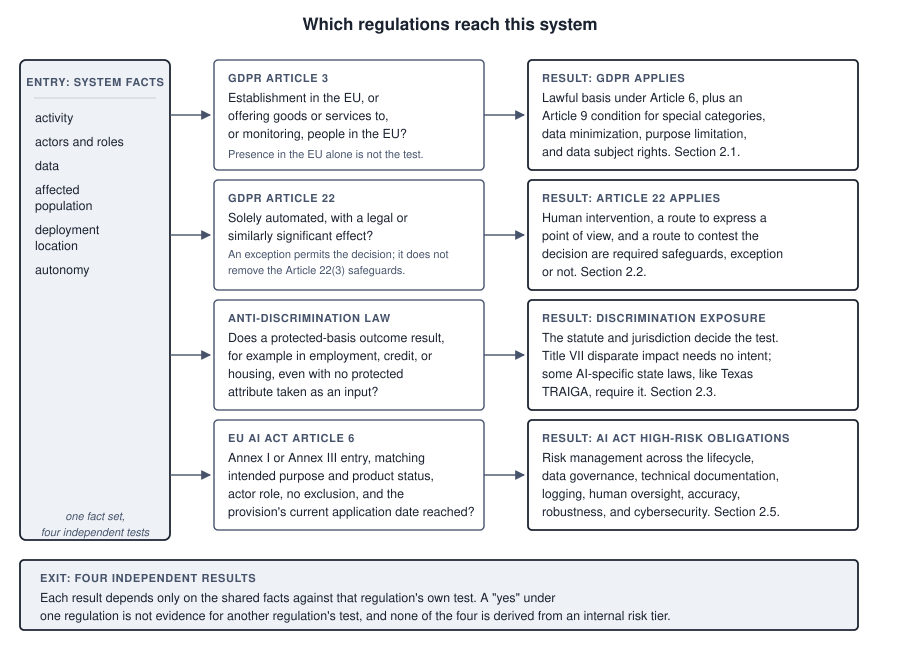
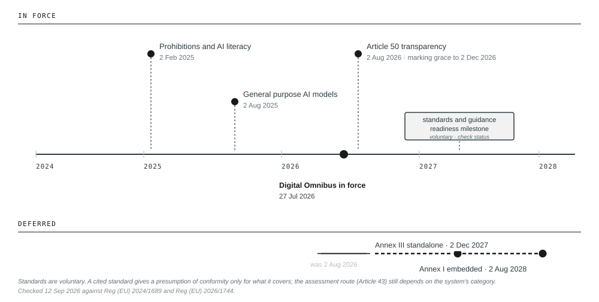
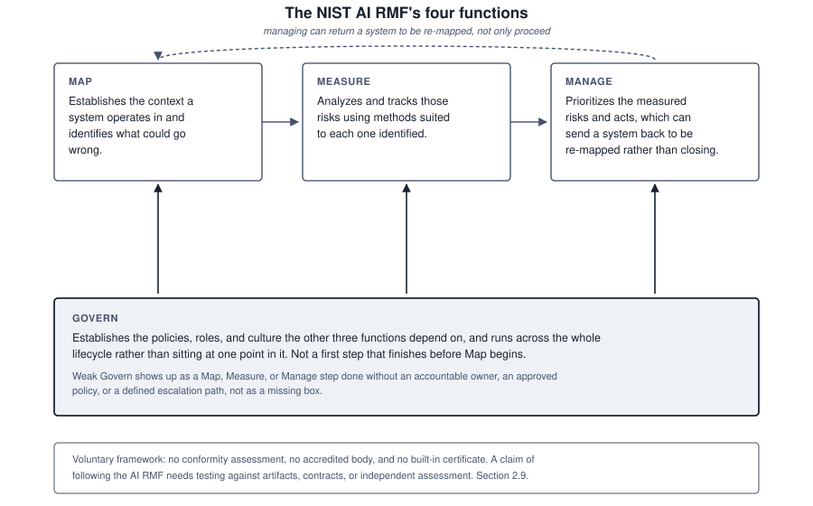

2. The Regulatory Landscape
The European Union’s AI Act is the most comprehensive law written specifically for artificial intelligence anywhere in the world. It sorts systems by how much risk they present, bans a few outright, and imposes substantial obligations on those it calls high risk, a category that includes AI used in hiring, lending, healthcare, and education. Section 2.5 sets out what it requires. It was adopted in 2024, and the obligations were scheduled to arrive in stages.
On 24 July 2026, the European Union published a regulation amending that Act. Nine days before its most significant deadline was due to take effect, the deadline moved by sixteen months.
That legal sequence is documented and verifiable; how any specific organization actually behaved in response to it generally is not, and this chapter does not claim to have surveyed one. What the sequence makes visible is two planning risks any organization faces, regardless of which one it happened to fall into. An organization that treats a date as a certainty risks building compliance programmes, hiring, and committing budget against a deadline that then moves out from under the plan. An organization that treats a proposal as a decision risks reading a proposal to defer, such as the Commission’s November 2025 proposal, as though it had already settled the matter. It then risks slowing down during the gap between the proposal and its actual enactment, when the original date remains the legally operative one regardless of what everyone expects to happen to it. Neither risk requires assuming that a specific organization did either thing; both follow from the structure of the sequence itself, which is what makes the lesson general, not anecdotal. Treating the date as what it was, one input to a plan that should have been able to absorb its movement, avoids both.
What follows is an accurate account of the obligations in force as of August 2026. Parts of it will be wrong by the time you read it. Memorizing a compliance calendar is not the point; the calendar will move. This chapter calls each applicable body of law a regulation. The real work is to work out, for a system in front of you, which regulations reach it and what they demand, and to notice when that answer changes.
Hold section 1.6’s distinction while reading this chapter. Everything in it is compliance: what some rule requires, where it applies, and when. That is the narrower of the two categories, and most systems an organization operates fall outside all of it. The chapter is here because the duties are real where they attach and expensive to discover late, not because knowing them is the same as governing.
What you will be able to do
- Determine which regulations apply to a described system, across privacy, discrimination, consumer protection, and AI-specific law
- Explain what Article 22 restricts, what it permits, and what makes human involvement meaningful
- Describe how conformity is demonstrated under the EU AI Act, and why the standards machinery determines what is actually required
- State the position of United States federal and state law without overstating its stability
- Distinguish what ISO 42001 certification demonstrates from what the AI Act requires
2.1 GDPR and AI
Before any AI-specific regulation existed, privacy law already applied, and for most organizations it remains the regulation that applies soonest. AI systems process personal data at training, at inference, and in their outputs.
The European Union’s General Data Protection Regulation applies to processing carried out through an establishment in the EU. It can also reach a controller or processor outside the EU when the processing relates to offering goods or services to people in the EU or monitoring their behaviour there. A person’s presence in the EU is not, by itself, the test. Four of its requirements press directly on how AI is built.
A lawful basis is required, and six exist. The available one depends on the actor and the purpose. Private development typically considers legitimate interests or consent, while public task, legal obligation, contract, or vital interests can apply in narrower settings. Consent must be freely given, specific, informed, and unambiguous, so telling users that their data will be used for training does not by itself make prior consent, given for another purpose, valid for that new one. Where the data includes health, biometric, or other special categories, a separate Article 9 condition is required in addition to the Article 6 basis, and it is easy to secure the first and forget the second. Legitimate interests requires a legitimate interests assessment, a documented weighing of the organization’s interest against the individual’s rights and expectations. This means identifying the interest, showing the processing is necessary to achieve it, not merely convenient, and demonstrating that the individual’s interests do not override it. Regulators have been sceptical of the basis where the processing has significant effects on people, though no fixed threshold of expected benefit decides the necessity question on its own.
Data minimization requires that only data which is adequate, relevant, and necessary be collected. This sits in unresolved tension with machine learning, where more data generally produces better models, and no amount of careful drafting dissolves the tension. What it requires in practice is that each category of data be justified against the specific purpose, not collected because it might prove useful.
Purpose limitation constrains reuse. Data collected for one purpose may not be processed for an incompatible one. Whether training a model counts as compatible reuse depends on the relationship between the purposes, what people would reasonably expect, and what safeguards apply. Using service transcripts to improve the service that generated them is more defensible than using them to train something unrelated.
Data subject rights create difficulties specific to AI. Access means telling a person whether their data was used in training and what has been inferred about them. Rectification means correcting inaccurate data, but correcting a record does not remove its influence from a model already trained on it. Erasure raises the same problem more sharply. The data is gone from storage; its effect on the parameters is not. Whether erasure obliges retraining is unsettled, and organizations should document the position they have taken instead of hoping the question does not arise.
2.2 Article 22 in depth
One provision deserves extended treatment because it governs the situations where AI most directly determines what happens to a person.
GDPR Article 22 gives a person the right not to be subject to a decision based solely on automated processing, including profiling, which produces legal effects concerning them or similarly significantly affects them. Three elements determine whether it applies.
The first is whether the decision is solely automated. If a person is meaningfully involved, the article does not engage. Everything depends on what meaningfully means, and regulators have been clear that involvement which is nominal does not count. A reviewer who approves whatever the system produces has not removed the decision from the article’s scope.
The Article itself does not name a test. The European Data Protection Board’s guidance, and the Court of Justice’s 2023 SCHUFA judgment, establish two things as law. Token involvement does not remove a decision from Article 22, and a score can itself be a decision within the Article even when a person formally signs off afterward, if that score effectively determines the outcome. What counts as genuine involvement in a given case is then a matter of evidence, not a fixed formula. In practice, auditors look for whether the reviewer has authority to reach a different conclusion, access to information beyond the system’s output, time proportionate to the decision, and a nonzero override rate. They also look for the opposite signature, where approval rates approach unity, review times are too short for the information to have been read, nothing beyond the system’s output is available, and performance measures reward agreeing with the system. None of these indicators is a settled legal threshold, and their weight depends on the context. What the law is clear on is that a reviewer who rubber-stamps has not removed the decision from the Article’s scope, and that an upstream score which effectively decides the outcome can fall within Article 22 on its own.
The second is whether the effect is legal or similarly significant. Legal effects are those that change someone’s legal position, such as a contract terminated, a benefit refused, or a licence withdrawn. Similarly significant effects are those with comparable practical weight, which clearly includes credit, employment, insurance, and access to education or essential services. Online advertising generally does not reach the threshold. Content moderation is contested, and the answer probably depends on what the platform is to the person affected.
The third is the set of exceptions. Solely automated decisions with significant effects are permitted where necessary for a contract, authorized by law, or based on explicit consent. Even then, safeguards are mandatory, including the right to obtain human intervention, to express a point of view, and to contest the decision. An exception permits the automation; it does not remove the recourse.
For FAIRLEND, working this properly is instructive. Meridian’s model scores applications and a loan officer approves or declines. On paper this is not solely automated. Now check the signature. If officers agree with the model in 97 percent of cases, if the average review takes forty seconds, if the officer sees the score before the application, and if departing from the model requires a memo that a supervisor reviews, those are the facts. They are the indicators regulators and courts look to, not a self-executing test. They trigger the investigation and may support a conclusion that Meridian is making solely automated decisions with a person present. What that investigation cannot skip is the missing legal element, whether the safeguards Article 22 requires exist at all, and it should proceed under qualified legal review instead of resting on the pattern-match alone. Nothing about running that investigation required examining the model.
2.3 Anti-discrimination law
Laws prohibiting discrimination were written long before AI and reach it without amendment.
In the United States, Title VII covers employment discrimination on the basis of race, colour, religion, sex, and national origin, with the Americans with Disabilities Act and the Age Discrimination in Employment Act extending coverage. The Equal Credit Opportunity Act covers credit, and the Fair Housing Act covers housing. Two theories matter, and the second is the one that reaches AI.
Disparate treatment is intentional differential treatment on a protected basis. Few AI systems take a protected characteristic as an input, so direct claims are uncommon.
Disparate impact is a neutral practice that disproportionately disadvantages a protected group. No intent is required.
Such a practice is unlawful unless the employer shows it is job-related and consistent with business necessity, and even then the plaintiff may prevail by identifying a less discriminatory alternative that serves the same interest.
This is the doctrine that catches machine learning, and the mechanism is worth being precise about. A model that never sees race can still produce racially disparate outcomes, because other variables carry the information. Postcode correlates with race in most American cities because of a documented history of segregation in housing policy. Name carries information about ethnicity. The gaps in an employment record carry information about caregiving and therefore about sex. Purchasing patterns carry information about almost everything. Removing the protected variable removes the label, not the signal, and a model trained to find predictive structure will find the proxies whether or not anyone intended it to.
For TALENTSCREEN, this produces the most commonly misunderstood point in the chapter. Calloway bought the tool. The vendor built it, trained it, and holds the information about how. If the tool produces disparate impact in Calloway’s hiring, Calloway is the employer and Calloway is liable regardless of the purchase. That much is settled. What is not settled is whether the vendor is also exposed. In Mobley v. Workday, a federal court allowed federal discrimination claims against a screening vendor to proceed on the theory that a vendor performing traditional hiring functions on an employer’s behalf can itself be treated as the employer’s agent. That is a ruling that claims may proceed, not a final finding of liability, and it will turn on the vendor’s role, its control over the outcome, and its conduct. But it defeats any categorical assurance that a vendor has no exposure to the applicant, and it is why the contract between Calloway and its vendor allocates risk between the two of them without deciding what either owes the applicant under the statute.
Some jurisdictions have added AI-specific procedural duties on top. New York City requires an annual independent bias audit of automated employment decision tools, with results published and candidates notified before use. Illinois regulates AI analysis of video interviews through notice and consent requirements. Verify the current form of these before relying on them.
2.4 Consumer protection, liability, and intellectual property
Three further bodies of law reach AI without naming it.
Consumer protection law is the first. The Federal Trade Commission Act prohibits unfair and deceptive practices, and state equivalents do the same. Deception covers claims about what a system does, including describing a process as human-reviewed when it is not, and overstating accuracy in marketing. Unfairness covers substantial injury that consumers cannot reasonably avoid and that is not outweighed by benefits. The remedy worth knowing about is algorithmic disgorgement, in which the FTC has required companies to delete models trained on improperly obtained data. That converts a data governance failure into the destruction of the asset the data was collected to build, which changes how the risk should be priced.
Product liability is the second, and how it applies to AI is still being worked out. The doctrine distinguishes three kinds of defect, a manufacturing defect, where one unit departs from its design; a design defect, where the design itself is unreasonably dangerous; and a failure to warn. None of the three maps cleanly onto a system whose behaviour emerges from training, not from a specification someone wrote. The European Union has revised its Product Liability Directive to bring software within scope, and the movement is toward making claims easier to bring, not harder.
Intellectual property is the third, and it raises two separate questions. Whether training on copyrighted material is infringement or fair use is being litigated and is not settled. Whether AI-generated output attracts copyright depends on human authorship, and purely machine-generated work generally does not qualify, which means content produced this way may not be protectable. Practical governance here consists of documenting the provenance of training data, understanding what vendor indemnities actually cover, and setting policy on what may be produced with these tools and how it is marked.
2.5 The EU AI Act
The AI Act is the most comprehensive AI-specific regulation in force. It regulates by risk tier, not by sector, and it allocates duties by role.
Some practices are prohibited outright. These include manipulative techniques that cause significant harm, exploitation of vulnerability, social scoring by public authorities, certain uses of real-time remote biometric identification in public spaces, emotion inference in workplaces and educational settings, and untargeted scraping to build facial recognition databases. The July 2026 amendments added prohibitions covering AI-generated non-consensual intimate imagery and child sexual abuse material, applying from 2 December 2026.
High-risk systems are permitted, subject to substantial obligations. Two routes into the category exist. Annex I covers AI that is a safety component of a product already regulated under EU product legislation, such as medical devices and machinery. Annex III lists standalone applications including biometrics, critical infrastructure, education, employment, essential public and private services including credit, law enforcement, migration, and justice. Landing in one of these sectors is a starting point for the analysis, not its conclusion. High-risk status has to be determined from Article 6, the applicable Annex entry, intended purpose, product status, actor, exclusions, and current application date, since a sector label such as healthcare or education does not by itself complete the test. Run that test against the facts given for them in this book, and all three running cases land here.
Once high-risk status is confirmed, the obligations form a risk management system operating across the lifecycle, not at a single point in it. They include data governance covering training, validation, and testing data, and technical documentation sufficient for an authority to assess conformity. They also include automatic logging, transparency to the deployer, human oversight designed in rather than asserted, and appropriate accuracy, robustness, and cybersecurity.
Limited-risk systems carry transparency duties under Article 50, including disclosure when a person is interacting with an AI system, disclosure of emotion recognition and biometric categorization, and marking of AI-generated content in a machine-readable form.
General purpose AI models are regulated separately from the tier system, with documentation, downstream information, copyright policy, and a published summary of training content. Models presenting systemic risk carry additional evaluation, mitigation, incident reporting, and cybersecurity duties.
Duties attach by role.
A provider develops an AI system and places it on the market. A deployer uses one in the course of a professional activity.
Providers carry the design and conformity obligations. Deployers carry obligations of use, oversight, monitoring, and informing affected people, though the specific duties within each category depend on the system’s risk tier and the deployer’s own role and activity; they do not form one uniform bundle every deployer owes in the same form. Calloway is a deployer of TALENTSCREEN. Northfield is both a provider and a deployer of MEDASSIST, because it built the system it uses. An organization that fine-tunes a purchased model, or puts its own name on it, may become a provider of a system it did not originally build.
Four regulations have now each supplied their own trigger, and it is worth seeing them side by side before moving on, because they do not share a source of truth and running them separately is the point, not an inconvenience.

Read Figure 3.1 from the left. One entry node holds a system’s own facts, its activity, its actors and their roles, its data, the population it affects, its deployment location, and its autonomy. Four arrows leave that single node, one to each regulation’s own trigger test, because the facts are shared but the tests are not. GDPR Article 3 asks a territorial question. GDPR Article 22 asks whether a decision is solely automated with a significant effect. Anti-discrimination law asks whether a protected-basis outcome results, regardless of what the model was given as input. The AI Act’s Article 6 asks about an Annex entry, an intended purpose, a product status, an actor role, an exclusion, and a date. Each test produces its own result box stating what applies if the test is met, and the footer band is the point of the whole figure. A “yes” under one regulation is not evidence for another regulation’s test, and none of the four results is derived from an internal risk tier.
2.6 The Digital Omnibus amendments
The timeline as originally enacted was staged. Prohibitions and the AI literacy obligation applied from 2 February 2025. General purpose model obligations applied from 2 August 2025. High-risk obligations were due on 2 August 2026.
That last date did not hold, and the reason matters more than the fact.
By late 2025 the implementation machinery was visibly behind. Member states had not all designated national competent authorities. More consequentially, the harmonized technical standards being developed by the European standardization bodies were not finished. Those standards are the practical route to demonstrating compliance, and without them organizations faced obligations stated in general terms with no agreed benchmark for meeting them.
The Commission proposed targeted amendments in November 2025. Negotiations were difficult, with an initial trilogue in April 2026 ending without agreement. Provisional agreement came in May, the Parliament endorsed the text in June, the Council approved at the end of that month, and the amending regulation was published on 24 July 2026 and entered into force on 27 July.
The deferrals are substantial. Standalone high-risk systems under Annex III now have until 2 December 2027. High-risk AI embedded in regulated products under Annex I has until 2 August 2028.
Reading only that summary produces a serious error, because several things did not move. The Article 50 transparency obligations applied from 2 August 2026 as originally scheduled, with a narrow transitional provision giving generative systems already on the market until 2 December 2026 to meet the machine-readable marking requirement. Systems entering the market after August had no such grace. The prohibitions have been in force since February 2025 and were extended, not relaxed. General purpose model obligations have been in force since August 2025. And the supervisory powers of the EU AI Office were broadened.
The lesson for practice is broader than a moved deadline. The amendment changed substance as well as timing. The extended prohibitions and broadened supervisory powers noted above are two examples; a third is the AI literacy duty, which softened from a requirement to ensure literacy into a requirement to support its development. A programme that tracks only the date misses changes like this one. An organization that stopped work on reading the proposal has lost sixteen months it will need, and it needs to check what changed as well as when it takes effect.

Read Figure 3.2 as two bands, obligations already in force above, which run longer than most summaries of the deferral imply, and below them the ones that moved. Notice that the deferral applies to one category, high-risk conformity, and that everything else on the chart either never moved or moved by four months, not sixteen. Notice also that the marker for harmonized standards sits before the deferred deadline, not after it. That is a sequence, not a legal dependency. Standards are voluntary. A provider may always demonstrate compliance by other adequate means, so their absence never made the obligation impossible to discharge. What it removed was the cheaper, more certain route, leaving most providers to document on their own, without a benchmark, how their systems met the Act’s requirements. Multiplied across an industry, that cost matches the reason the regulation’s own recitals give for the deferral, the same delayed national governance frameworks and unfinished harmonized standards this section opened with. The recitals of the amending regulation itself are the primary source to check before citing that reasoning elsewhere. The dates now enacted will not move because a standard slips; they move only if the law is amended again.
2.7 Standards and conformity routes
Legislation of this kind states requirements in general terms because it must apply across every sector and outlast the technology it regulates. The AI Act says training data must be sufficiently representative and that systems must achieve appropriate accuracy. It does not say how representativeness is measured or what level of accuracy counts as appropriate. Something has to supply that specificity before anyone can comply, and what supplies it turns out to matter as much as the legislation itself.
Conformity assessment is the process of establishing that a system meets the requirements. For most standalone high-risk systems, those listed in Annex III points 2 through 8, the provider always assesses internally, evaluating its own system against the requirements and documenting the result. For the biometric systems listed in Annex III point 1, internal assessment is available only when the provider has applied a harmonized standard or a common specification covering the requirement; otherwise a notified body must be involved. High-risk AI embedded in a product already subject to third-party assessment under other EU product law follows that product law’s own procedure instead. Notified bodies are independent organizations designated by member states to perform this function.
Harmonized standards are the bridge. Developed by the European standardization organizations at the Commission’s request and cited in the Official Journal, they translate the Act’s general requirements into specific technical practice.
Conformity with a harmonized standard creates a presumption of conformity only for the requirements and obligations the cited parts cover. Record the standard, version, Official Journal citation, covered requirement, system category, and Article 43 route. The presumption does not convert the standard into a complete certificate for the system or prevent a competent authority from examining conformity.
Deviation is permitted, and this is the point most often missed. A provider that does not rely on a harmonized standard must instead document how its own technical solution meets the requirement, which is more expensive and more contestable than citing a standard, but it is a route the legislation deliberately keeps open. A separate mechanism applies once the Commission has adopted a common specification for a requirement. A provider that departs from that specification must then justify that its own solution meets the requirement to at least an equivalent level.
Once conformity is established the provider draws up an EU declaration of conformity, affixes CE marking, and registers the system in an EU database before placing it on the market.
This machinery explains the deferral. Delayed standards removed a shared benchmark and a limited presumption of conformity. They did not place every provider on one route. Annex III points 2 through 8 remain on internal control. Annex III point 1 follows the Article 43 conditions for internal or notified-body assessment. Annex I systems follow the procedure in the applicable product legislation. The current production check is therefore not simply whether standards exist. It is which cited standard covers which requirement, which system category is involved, and which route Article 43 assigns. None of this made compliance unlawful or impossible. It made compliance costly and uncertain, which for an obligation landing on thousands of firms in the same month amounts to the same political problem. The standardization bodies responded by accelerating their process, permitting direct publication after a positive enquiry vote instead of requiring a separate formal vote. Whether the standards are cited in the Official Journal by the time you read this is the single most useful thing to check about the current state of the Act.
2.8 What ISO 42001 does and does not do
ISO/IEC 42001 is a management system standard, which is a particular kind of document and worth understanding before assessing what it is good for. It does not say how an AI system should behave. It says what an organization must have in place to manage AI deliberately, not incidentally, a stated policy, assigned responsibilities, a process for identifying and treating risk, objectives that can be measured, internal audit, and periodic review by management. Its close relatives are ISO 9001 for quality and ISO 27001 for information security, and it works in the same way. An accredited body examines the organization against the standard and, if satisfied, certifies it. That certificate is meaningful. It tells a customer or a regulator that an independent examiner found a systematic approach rather than an improvised one.
Organizations frequently treat that certificate as the route to AI Act compliance. It is not, and the reason is conceptual, not a matter of coverage.
The ISO catalogue in this area has grown substantially. Beyond 42001 and the terminology standard 22989, recent additions address impact assessment, requirements for the bodies that audit and certify management systems, conformity assessment schemes, transparency taxonomy, explainability, and environmental sustainability, with further work on AI cybersecurity and testing. The impact assessment standard bears directly on how impact assessments are defined and conducted, and the certification-body standard is what makes certification against 42001 mean anything at all. Verify publication status before relying on any of them.
But the European standardization committee working on AI Act standards has stated that ISO/IEC 42001 does not cover all the quality management requirements the Act imposes, and a separate European standard is being developed to fulfil the complete set.
The reason is not that management system standards ignore people outside the organization. The related ISO/IEC 42005 impact assessment standard expressly directs an organization to identify affected stakeholders, groups, and society-level effects, and 42001 itself requires the organization to consider their interests when setting objectives. The gap is one of legal scope and evidence. Certification shows that an accredited body examined the management system within a defined scope and found it systematic. It does not show that any particular high-risk system satisfies every AI Act requirement, that a specific impact was actually prevented, or that the certified scope matches the deployed system. A well-run management system and a compliant deployment are different claims, verified by different evidence, and a certificate answers only the first.
This is the argument of Chapter 1 reappearing in concrete form. Certification is worth having. It demonstrates that an organization has a systematic approach and that an accredited body has examined it. It does not demonstrate that a particular system meets the Act’s requirements, and it should not be presented as though it does.
2.9 The United States
The United States has no equivalent standards machinery, and the document that fills the space is voluntary. The NIST AI Risk Management Framework was published in 2023 by the National Institute of Standards and Technology at the direction of Congress. It organizes the work into four functions. Govern establishes the policies, roles, and culture the other three depend on, and it runs across the whole lifecycle instead of sitting at one point in it. Map establishes the context a system operates in and identifies what could go wrong. Measure analyzes and tracks those risks using methods suited to each. Manage prioritizes them and acts, which can send a system back to be re-mapped instead of closing the work out.

Figure 3.3 draws Govern as a band underneath the other three, not as a first box in a line, because that is the relationship the framework itself describes. Govern is not a phase that finishes before Map starts, and a program that treats it that way has usually skipped naming an accountable owner or an escalation path, not skipped a step. Map, Measure, and Manage are drawn as a cycle, not a pipeline with an end, since a decision made in Manage routinely sends a system back to Map when a control changes what the system does or who it reaches. None of this is enforced by anything outside the organization that adopts it, which the figure’s own footer states directly.
The framework is descriptive rather than prescriptive. It says what an organization should attend to and leaves the thresholds to the organization, which is what makes it usable across sectors and also what limits it. There is no conformity assessment, no accredited body, and no built-in certificate. An organization stating that it follows the AI RMF is not making an uncheckable claim, but it is making one with no legal presumption attached. The claim can still be tested against the required artifacts (a governance policy, a risk register, measurement records), against contractual commitments, or through an independent assessment, but that testing has to happen, because no certificate does it automatically. NIST reports that AI RMF 1.0 is under revision, so any mapping to it should record the version relied on and its date.
That is not a criticism of a document never built to be certifiable. It matters because the claim is made in procurement and in contracts as though it carried the weight of an ISO certificate, and it does not. The claim needs testing whenever a vendor offers the framework as evidence.
The United States has no comprehensive federal AI statute. What exists is a contest between federal executive policy seeking uniformity, an active and expanding body of state law, and congressional proposals that have not become law.
Federal executive policy shifted substantially in late 2025. Earlier direction emphasizing safety testing and civil rights protections was revoked. A December 2025 executive order on a national AI policy framework directed agencies to identify state AI laws considered inconsistent with national policy and to challenge them, and a litigation task force was announced in January 2026. A March 2026 framework directed Congress toward a unified federal approach and called for preemption of state AI law, with carve-outs including child safety, state government procurement and use, and AI infrastructure regulation.
Preemption, the displacement of state law by federal law, is not settled, and this is the practically important point. An executive order cannot by itself displace state law. Whether state AI laws are affected will be determined through litigation and possibly through federal legislation, and a bipartisan group of more than twenty state attorneys general has opposed the effort. Each state AI law remains enforceable on its own terms, from its own effective date, unless and until a court enjoins or stays it specifically or a statute preempts it. That is not a uniform default outcome. Colorado’s SB 24-205 shows a law can be stayed by a federal court well before any final ruling on preemption or constitutionality, so the operative question for a given law is its own current procedural status, not a general presumption that state law survives untouched. Comply with each law as it currently stands and monitor the contest.
Congress has become more active without legislating. A June 2026 bipartisan discussion draft would require frontier model developers to disclose model information and obtain third-party audits through designated verification organizations, and would preempt state laws regulating AI development for three years. That preemption is narrower than it first appears, reaching development activity, not deployment or laws of general application.
Federal agencies continue applying existing authority within their domains regardless of the preemption question, because that authority rests on statutes, not on AI-specific policy. The FTC acts under its consumer protection authority, the EEOC on employment, banking regulators through model risk management frameworks that predate AI, and the FDA on medical devices.
State legislation has developed along two tracks that reach different parties, and the two are easy to conflate because both arrived at once. The algorithmic discrimination track reaches deployers making consequential decisions about people, typically through notice, disclosure, and duties tied to specific decision types. The frontier model track reaches developers of the largest models, requiring published safety frameworks and transparency reporting, not deployment-level duties. The table below is a snapshot as of the date checked; state AI legislation is moving faster than most areas of law this book covers, and each row should be verified against the current statute before being relied on.
| Jurisdiction | Instrument | Track | Status (checked 2026-09-13) | Effective date |
|---|---|---|---|---|
| Illinois | HB 3773, amending the Illinois Human Rights Act | Algorithmic discrimination (employment) | Enacted, in force | 1 Jan 2026 |
| New York | RAISE Act | Frontier model | Enacted | 1 Jan 2027 |
| California | SB 53 | Frontier model | Enacted, in force | 1 Jan 2026 |
| Texas | TRAIGA, Responsible AI Governance Act | Neither track cleanly, a disclosure-and-prohibition statute enforced only by the state attorney general | Enacted, in force | 1 Jan 2026 |
| California | SB 7, would have created deployer duties for automated employment decisions | Algorithmic discrimination (employment) | Vetoed October 2025; not in force | Did not take effect |
| Colorado | SB 24-205 | Comprehensive, AI Act-style duty of care | Repealed before its own deferred start date arrived | Never took effect |
| Colorado | SB 26-189, Automated Decision-Making Technology Act, replacing SB 24-205 | Disclosure and individual rights | Enacted | 1 Jan 2027 |
Two entries in that table need more care than a row can hold.
Texas is the case to be careful with. TRAIGA took effect 1 January 2026 alongside Illinois’s statute, which invites filing it next to Illinois as another 2026 employment-adjacent AI law. It is not. Its consumer-facing provisions exclude anyone acting in an employment context, but its separate unlawful-discrimination provision reaches any person who develops or deploys AI with intent to discriminate against a protected class, private employers included. It imposes no impact-assessment or due-diligence duty, and it expressly declines to treat disparate impact alone as evidence of that intent. A reader who files Texas next to Illinois on the strength of the date alone will misclassify what each one requires.
California is the case to watch for the opposite error. No California law creating deployer duties for automated employment decisions was in force as of this writing; SB 7 would have imposed one and was vetoed. Treat any claim that California regulates automated employment decisions the way this chapter’s opening treated the AI Act’s original deadline, and verify it against the current statute before relying on it.
Colorado is the instructive case, and it is instructive for what happened to it, not for what it required.
Colorado enacted SB 24-205 in May 2024, the first comprehensive state AI law in the United States. It imported the shape of the AI Act, duties of care on developers and deployers of high-risk systems, risk management programs, impact assessments, and obligations to prevent algorithmic discrimination across employment, housing, lending, insurance, health care, and education. Its start date slipped from February 2026 to June 2026. In April 2026 xAI sued to enjoin it on constitutional grounds, the Department of Justice intervened in support, and a federal magistrate stayed enforcement. On 14 May 2026 the governor signed SB 26-189, repealing SB 24-205 and replacing it with a narrower Automated Decision-Making Technology Act built on disclosure and individual rights, not a duty of care. The replacement takes effect on 1 January 2027.
The original law never became operative. It was repealed before its own deferred start date arrived.
Two things follow that matter more than the details. An organization that built a Colorado compliance program in 2024 toward SB 24-205’s duty-of-care architecture would have spent two years preparing for obligations that never took effect. This is the same structural risk this chapter opened with, applied to a state law, not the AI Act. The point is the risk a two-year lead time creates against a moving date, not a claim that a specific organization did this. And any account describing Colorado’s duty of care in the present tense, including a course or a consultant, is describing something that does not exist. Check the current text before relying on any description of a state law, this one included.
Case in focus: FTC v. Rite Aid
Between 2012 and 2020, Rite Aid deployed facial recognition across hundreds of United States stores to identify people it believed had previously shoplifted or behaved disruptively. Employees received match alerts and acted on them, following customers, searching them, calling the police, and ordering them to leave.
The Federal Trade Commission’s complaint, filed in December 2023, describes a system deployed with almost no governance. Rite Aid did not test the technology’s accuracy before deploying it. Its first vendor disclaimed accuracy in the contract, in capital letters. The enrollment database was built from low-quality images, many from grainy security cameras and mobile phones. Between December 2019 and July 2020 the system generated more than five thousand match alerts in stores over a hundred miles from where the person had been enrolled. A single enrollment produced more than nine hundred alerts across more than a hundred and thirty stores in five days.
The distributional facts are the ones to sit with. Roughly eighty per cent of Rite Aid’s stores were in areas with a plurality of white residents. Roughly sixty per cent of the stores equipped with facial recognition were in areas with a plurality of Black, Asian, or Latino residents. The technology was deployed where its errors would fall on people who were not the majority of the company’s customers, and nothing in the record indicates that anyone decided this. It indicates that nobody examined it.
The stipulated order, entered in February 2024, is the part to read closely. Within forty-five days Rite Aid had to delete all photographs and videos collected in connection with the system, and any data, models, or algorithms derived in whole or in part from them. Within sixty days it had to instruct third parties who had received that material to do the same. Facial recognition was prohibited for five years. The order runs for twenty.
Two features of that remedy deserve notice. It reaches the model, not only the data, so the organization could not keep the asset built from improperly handled inputs. And it contains no exception for technical infeasibility, which an order against Ring the previous year had included. That earlier order required deletion of derived models unless such deletion was technically infeasible, a concession that model deletion may not be achievable in practice.
The complaint itself documents missing risk assessment, missing accuracy and fairness testing before deployment, poor enrollment image quality, inadequate employee training, monitoring too thin to catch nine hundred alerts from a single enrollment, and no response to a vendor’s own written warning about accuracy. Read through this book’s control model, those same facts also suggest an absent or ineffective problem statement, no deployment decision recording who accepted the risk, and no real assessment of the vendor’s disclaimer. That second layer is this book’s mapping onto the complaint’s facts, not a finding the Commission made, and the distinction matters. A student citing this case should be able to say which of these gaps the FTC alleged and which this book infers from what was alleged.
One caution against reading a trend into this. In December 2025 the Commission set aside an order against Rytr, an AI writing tool, on the grounds that the alleged facts did not support a violation. No algorithmic deletion order has issued since Rite Aid. The remedy exists and is available. Whether it is currently being used is a different question, and a governance function that assumed either answer would be guessing.
2.10 Where the law runs out
Most regulations in this chapter were drafted with a person acting on a system’s output in mind, and their machinery shows it. That is a drafting emphasis, not a scope limit. The AI Act itself reaches systems that influence a physical or virtual environment directly, and product safety regulations have long applied to autonomous products. What is genuinely missing is guidance on how obligations written around a human decision point apply once the system is the one acting.
That does not leave agentic systems unregulated. The AI Act classifies by use and by risk rather than by architecture. So an agent that screens job applicants is high risk on exactly the same footing as a model that scores them, and TALENTSCREEN’s obligations do not change because its vendor added autonomy. The obligations attach. The difficulty is that several of them were written on an assumption that autonomy removes.
Article 14 scales oversight to risk, autonomy, and context. It permits oversight measures built into a system before placement on the market and requires a way to intervene during operation or bring the system to a safe stop. Agentic deployment makes the control placement concrete. Consequential or irreversible actions may need approval before execution. Lower-consequence actions may proceed within fixed authority, subject to monitoring, interruption, and recovery.
Article 12 requires logging that supports traceability, risk detection, and post-deployment monitoring. It does not prescribe one universal agent identity record. Recording the identity and delegated authority under which an agent acted is this book’s implementation synthesis from that traceability objective. Present the legal duty and the additional design control separately.
Technical guidance remains incomplete. NIST’s agent work includes an initiative and an identity and authorization concept paper rather than a finished universal standard. The organization must therefore record three things separately. They are the legal duty, current technical guidance, and the additional control adopted for its own deployment.
Later chapters turn that distinction into permissions, approval gates, runtime monitoring, interruption, recovery, and evidence. Missing implementation guidance does not remove the underlying duty or prove that pre-action review is impossible.
Dedicated guidance is thin. Singapore’s Infocomm Media Development Authority has published a framework addressed specifically to agentic systems, among the earliest from a national regulator on this specific question, though this book has not attempted to verify that no other regulator published first. It has been revised at least once, so check the current version before relying on it. In the United States NIST has published work adjacent to the problem, including guidance on post-deployment monitoring in March 2026, but as of the date checked nothing that squarely answers the agent identity, authorization, and accountability question. Its Center for AI Standards and Innovation launched an AI Agent Standards Initiative in February 2026. Its National Cybersecurity Center of Excellence issued a concept paper on agent identity and authorization the same month, which as of August 2026 remains a concept paper, not a published standard. Verify the current status of both before relying on this description, since a concept paper can be superseded. A governance function told that a published NIST standard already answers this question has been told something this book could not confirm as of the date checked.
The practical position is uncomfortable and worth stating plainly. An organization deploying agents today carries obligations written for a different kind of system, with no authoritative guidance on how to meet them, and will be assessed against those obligations by an authority reasoning from first principles. Taking those obligations seriously anyway means logging that makes the authority under which an agent acted, and not only the action itself, reconstructable after the fact.
2.11 Making this tractable
Reading the preceding sections in sequence suggests an impossible compliance burden. It is tractable, and the technique that makes it tractable is worth stating directly.
Maintaining a separate compliance programme per regulation does not scale, and it produces the situation where one system is assessed three times by three teams reaching three conclusions. The alternative is to record each system’s facts once and run every applicable regulation’s own test against that shared record, the architecture Figure 3.1 laid out earlier in this chapter. The record of results, not a single internal risk label, is what the organization maintains. It records which regulations apply, on what test, with what evidence, and as of when. When a regulation moves, and this chapter has demonstrated that regulations move, only that regulation’s result needs to be rerun against the affected systems. What survives untouched is the fact record and each regulation’s own test, not a mapping that substitutes for them. A recorded result states what was true about a specific system at the time it was checked, and it still has to be revisited whenever the system’s own facts change or the regulation’s own rule changes, a distinction the next chapter develops in full.
Summary
Privacy law reached AI before AI-specific regulation existed and still governs most of what organizations do with data. Article 22 restricts solely automated decisions with significant effects, and whether human involvement is meaningful is determined by observable indicators rather than by whether a person is nominally present.
Anti-discrimination law reaches AI through disparate impact, which requires no intent. Removing protected characteristics from a model removes the label, not the signal, because other variables carry the same information. Liability sits with the deploying organization regardless of who built the system.
The EU AI Act regulates by risk tier and allocates duties by role. Its high-risk obligations were deferred in July 2026, to December 2027 for standalone systems and August 2028 for embedded ones, but prohibitions, general purpose model duties, and transparency obligations all remain in force. The deferral happened because the harmonized standards that make conformity cheap to demonstrate were not ready, which is the clearest available demonstration that compliance depends on machinery as much as on legislation.
ISO/IEC 42001 certification demonstrates a systematic management approach, examined and confirmed by an accredited body. It does not demonstrate AI Act conformity for a particular system, because the certificate answers a scope-and-process question, not the question of whether that system meets every requirement the Act imposes.
United States law is a contest between federal preemption efforts and active state legislation. State law binds until preempted.
None of this is stable, and a programme built to survive its movement is worth more than a programme built to satisfy its current form.
Review questions
COMPREHENSION
Explain why an AI system that takes no protected characteristic as an input can still create liability under disparate impact doctrine. Name three variable types that commonly carry protected-characteristic information and say what each encodes.
What does certification against ISO/IEC 42001 demonstrate, and what does it not demonstrate? Explain the difference in terms of whose risk each framework is designed to manage.
APPLIED
A European bank uses an AI system to decline credit applications automatically below a score threshold, with all other applications going to a human underwriter. Analyze the declined population under Article 22. Which element is contested, what would you need to know, and what would you advise if the bank wishes to keep the automation?
Your organization deploys a customer-facing chatbot in the EU that was placed on the market in June 2026. Which AI Act obligations apply to it and from when? Explain why the answer is not simply that high-risk obligations were deferred.
SPOT THE RISK
- A company’s AI compliance programme consists of the following. A named EU AI Act workstream preparing for a 2027 deadline. A separate GDPR programme owned by the privacy office. A vendor questionnaire asking suppliers to confirm they comply with applicable law. An ISO 42001 certification project. No inventory of AI systems, on the reasoning that the workstreams will identify what falls within their own scope. Identify at least five defects and state what each makes impossible.
COMPARE AND DECIDE
- An organization must decide whether to pursue ISO/IEC 42001 certification now or to wait for the European quality management standard being developed for AI Act purposes. What does each option buy, what does each cost, and what facts about the organization would decide it?
RUNNING CASE
MEDASSISTNorthfield built its own deterioration prediction tool and uses it internally. Determine its role under the EU AI Act if it were operating in Europe, identify which Annex applies and why that choice is not obvious, and state what changes about its obligations compared with Calloway’s position onTALENTSCREEN.
Every obligation in this chapter attaches to a system, which presumes that somebody knows which systems exist. Most organizations do not. They have more AI than they can list, arriving through procurement, through platforms, and through employees who would not describe what they are doing as deploying anything. Producing that list and sorting it is unglamorous work, and it is the point at which a governance programme either becomes real or remains a document.